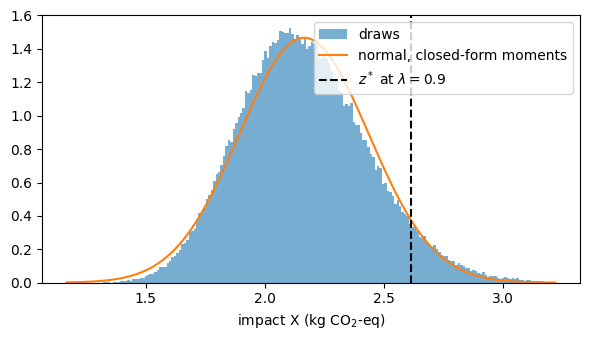

Chance-constrained PULPO under uncertainty: an open example#
This notebook runs PULPO’s uncertainty method end to end on the bundled
soc_demo_database: a toy ammonia system whose hydrogen comes from steam
methane reforming (SMR) or electrolysis. It needs neither ecoinvent nor a
commercial solver: the linear programs go to HiGHS and the cone to Clarabel,
both installed with PULPO.
As of now, PULPO considers uncertainty in the biosphere flows and the characterization factors only; technosphere exchanges are deterministic.
the deterministic optimum, solved in reduced space (
formulation='reduced');the declared uncertainty and its closed-form moments;
a chance-constrained front over the reliability level \(\lambda\), with an uncertain capacity of the electrolyzer;
the exact variance decomposition at a solution;
a screening of the parameters that declare no uncertainty;
an out-of-sample validation of every point, and the check that the coverage is exact when the impact is exactly normal;
the building blocks for formulations of your own.
The method is described in the documentation (Uncertainty). The one plot
needs matplotlib, which PULPO does not install; without it the plot is
skipped and everything else runs.
import contextlib, io
import numpy as np
import pandas as pd
from pulpo import pulpo
from pulpo.datasets.soc_demo_database import setup_soc_demo_db, METHOD_KEY
from pulpo.utils import uncertainty as unc
from pulpo.utils.utils import is_bw25
pd.set_option('display.precision', 4)
pd.set_option('display.width', 120)
quiet = io.StringIO()
with contextlib.redirect_stdout(quiet), contextlib.redirect_stderr(quiet): # it reports every write
setup_soc_demo_db()
1. The system and its deterministic optimum#
One unit of ammonia is demanded. Its hydrogen comes from SMR, which emits CO₂ and draws natural gas (with its methane leaks), or from electrolysis, which emits nothing directly but draws much electricity. The LCIA method is GWP100 over CO₂, CH₄ and N₂O.
project = 'soc_demo_project_bw25' if is_bw25() else 'soc_demo_project'
databases = ['soc_demo_background_db', 'soc_demo_foreground_db']
method = str(METHOD_KEY)
worker = pulpo.PulpoOptimizer(project, databases, {method: 1})
with contextlib.redirect_stdout(io.StringIO()):
worker.get_lci_data()
ammonia = worker.retrieve_processes(processes=['ammonia synthesis'])[0]
smr = worker.retrieve_processes(processes=['hydrogen SMR'])[0]
electrolysis = worker.retrieve_processes(processes=['hydrogen electrolysis'])[0]
choices = {'hydrogen': {smr: float('inf'), electrolysis: float('inf')}}
with contextlib.redirect_stdout(io.StringIO()):
worker.instantiate(choices=choices, demand={ammonia: 1})
lci = worker.lci_data
process_name = lambda j: lci['process_map_metadata'][j].split(' | ')[0]
flow_name = lambda e: lci['intervention_map_metadata'][e].split(' | ')[0]
SMR, ELY = (lci['process_map'][a.key] for a in (smr, electrolysis))
With the technosphere matrix \(A\) square and invertible, every scaling vector that
meets the balances is \(s = s_0 + S v\) with one free variable \(v_k\) per alternative.
solve(formulation='reduced') solves the LP over \(v\) (here: two columns instead of six
processes) and recovers \(s\) with one forward solve. The full Pyomo model gives the
same optimum.
with contextlib.redirect_stdout(io.StringIO()):
worker.solve(formulation='reduced')
s_det = unc.current_scaling_vector(worker.instance)
reduced_impact = worker.instance.impacts[method].value
with contextlib.redirect_stdout(io.StringIO()):
worker.solve() # the full LP, HiGHS
print(f"impact, reduced: {reduced_impact:.10f} full: {worker.instance.impacts[method].value:.10f}")
print(f"SMR {s_det[SMR]:.4f}, electrolysis {s_det[ELY]:.4f}")
impact, reduced: 1.6505600737 full: 1.6505600737
SMR 0.0000, electrolysis 0.1780
2. Declared uncertainty and closed-form moments#
import_declared takes every nonzero entry of \(B\) on a characterized flow and every
CF of the method, with the distribution the database declares. Parameters without
one are undeclared: they stay deterministic (mean = amount, variance 0) and are
listed for the screening in section 5. CO₂’s CF is exact (a normal with zero
width): CO₂ is the reference gas of GWP100.
data = unc.import_declared(worker)
pd.DataFrame(unc.counts(data))
| group | subgroup | status | uncertainty_type | n | |
|---|---|---|---|---|---|
| 0 | If | soc_demo_background_db | undeclared | 0 | 0 |
| 1 | If | soc_demo_background_db | declared | 2 | 3 |
| 2 | If | soc_demo_background_db | declared | 3 | 2 |
| 3 | If | soc_demo_background_db | declared | 5 | 1 |
| 4 | If | soc_demo_foreground_db | undeclared | 0 | 1 |
| 5 | If | soc_demo_foreground_db | declared | 4 | 1 |
| 6 | Cf | ('soc demo', 'climate change') | undeclared | 0 | 1 |
| 7 | Cf | ('soc demo', 'climate change') | declared | 2 | 1 |
| 8 | Cf | ('soc demo', 'climate change') | declared | 3 | 1 |
With independent inputs, \(X(s)=\sum_e q_e \sum_j b_{ej} s_j\) has, for every supported family (lognormal, normal, uniform, triangular),
with \(\mu_j=\sum_e \mathrm{E}[q_e]\mathrm{E}[b_{ej}]\), \(d_j=\sum_e(\mathrm{E}[q_e]^2+\mathrm{Var}\,q_e)\mathrm{Var}\,b_{ej}\), \(w_e=\mathrm{Var}\,q_e\) and \(y_e=\sum_j \mathrm{E}[b_{ej}] s_j\). The second sum is the covariance that all processes emitting flow \(e\) share through its one factor.
mom = unc.compute_moments(data, worker)
print(mom.summary())
print(f"at the deterministic optimum: E[X] = {mom.mean(s_det):.4f}, sigma = {mom.std(s_det):.4f}, "
f"sigma without the shared-CF covariance = {mom.std_independent(s_det):.4f}")
{'processes': 6, 'processes_with_variance': 4, 'uncertain_cfs': 1}
at the deterministic optimum: E[X] = 1.8659, sigma = 0.8580, sigma without the shared-CF covariance = 0.8580
3. Chance-constrained front#
The electrolyzer’s capacity is uncertain: a triangular distribution between 0.005 and 0.035 with its mode at 0.03. At a joint reliability \(\lambda\) the impact target and the capacity must hold together. Boole’s inequality splits the failure budget \(1-\lambda\) across the \(K=2\) events, which needs no assumption on how they depend on each other:
The capacity enters at its exact quantile. The impact row assumes \(X\) normal (the only normality assumption; section 6 tests it). In reduced space the problem is a second-order cone with one column per alternative, solved by Clarabel.
capacity = {'uncertainty_type': 5, 'minimum': 0.005, 'loc': 0.03, 'maximum': 0.035}
problem = unc.ChanceConstrained(worker, mom, upper_bounds={electrolysis: capacity})
front = problem.solve([0.5, 0.7, 0.9, 0.95, 0.99])
table = front.table()
table['electrolysis'] = [p.s[ELY] for p in front.values()]
table['capacity bound'] = [p.bounds[('upper', ELY)] for p in front.values()]
table
| lambda_impact | kappa | mean | sigma | adjusted | seconds | electrolysis | capacity bound | |
|---|---|---|---|---|---|---|---|---|
| lambda | ||||||||
| 0.50 | 0.750 | 0.6745 | 2.1519 | 0.2740 | 2.3367 | 0.0119 | 0.0187 | 0.0187 |
| 0.70 | 0.850 | 1.0364 | 2.1574 | 0.2726 | 2.4399 | 0.0155 | 0.0156 | 0.0156 |
| 0.90 | 0.950 | 1.6449 | 2.1655 | 0.2720 | 2.6128 | 0.0157 | 0.0111 | 0.0111 |
| 0.95 | 0.975 | 1.9600 | 2.1687 | 0.2722 | 2.7023 | 0.0148 | 0.0093 | 0.0093 |
| 0.99 | 0.995 | 2.5758 | 2.1730 | 0.2730 | 2.8762 | 0.0150 | 0.0069 | 0.0069 |
Diagnostics at every point: \(\sigma\) without the shared-CF covariance and the ratio \(\sigma/\sigma_{\text{indep}}\), the CFs’ share of the variance.
unc.diagnostics(front, mom)[['sigma', 'sigma_indep', 'sigma_over_indep', 'cf_share', 'n_variables', 'n_rows']]
| sigma | sigma_indep | sigma_over_indep | cf_share | n_variables | n_rows | |
|---|---|---|---|---|---|---|
| lambda | ||||||
| 0.50 | 0.2740 | 0.2740 | 1.0002 | 0.0018 | 2 | 3 |
| 0.70 | 0.2726 | 0.2725 | 1.0002 | 0.0019 | 2 | 3 |
| 0.90 | 0.2720 | 0.2719 | 1.0002 | 0.0020 | 2 | 3 |
| 0.95 | 0.2722 | 0.2722 | 1.0002 | 0.0021 | 2 | 3 |
| 0.99 | 0.2730 | 0.2730 | 1.0002 | 0.0021 | 2 | 3 |
4. Where the variance comes from#
\(X\) is a sum of products of independent inputs, so its Sobol’ decomposition stops at second order and is exact:
and \(\sum S_1+\sum S_2=1\). No sampling, no confidence intervals.
point = front[0.9]
dec = unc.decompose(point, mom, unc.families_by_database(worker))
def named(frame):
label = [f"CF {flow_name(e)}" if g == 'Cf' else f"{flow_name(e)} @ {process_name(j)}"
for g, e, j in zip(frame['group'], frame['flow'], frame['process'])]
return frame.assign(parameter=label).set_index('parameter').drop(columns=['group', 'flow', 'process'])
print(f"sum S1 + sum S2 = {dec.parameters['S1'].sum() + dec.interactions['S2'].sum():.15f}")
named(dec.top(6))
sum S1 + sum S2 = 1.000000000000000
| family | S1 | ST | |
|---|---|---|---|
| parameter | |||
| Carbon dioxide, fossil @ hydrogen SMR | soc_demo_background_db | 0.7908 | 0.7908 |
| Dinitrogen monoxide, fossil @ ammonia synthesis | soc_demo_foreground_db | 0.1209 | 0.1209 |
| Carbon dioxide, fossil @ electricity supply | soc_demo_background_db | 0.0716 | 0.0716 |
| Methane, fossil @ natural gas extraction | soc_demo_background_db | 0.0144 | 0.0145 |
| CF Methane, fossil | Cf | 0.0019 | 0.0020 |
| Methane, fossil @ hydrogen SMR | soc_demo_background_db | 0.0001 | 0.0001 |
dec.families()
| S1 | ST | |
|---|---|---|
| family | ||
| soc_demo_background_db | 0.8771 | 0.8772 |
| soc_demo_foreground_db | 0.1209 | 0.1209 |
| Cf | 0.0019 | 0.0020 |
5. Parameters that declare no uncertainty#
Undeclared parameters are deterministic in every result above. The screening asks what they would carry if they were uncertain: each gets the same coefficient of variation \(r\), with its mean unchanged (a lognormal, mirrored for negative amounts), CO₂’s CF excepted. The ranking orders them by their deterministic contribution \(\mathrm{E}[q_e]\,b_{ej}\,s_j\), which fixes the order of their total-order indices up to the CF factor and does not depend on \(r\).
screening = unc.screen_undeclared(point, data, worker, exact_cfs=unc.co2_flows(worker), widths=(0.1, 0.3))
screening.sigma
| sigma | ratio | undeclared_share | |
|---|---|---|---|
| r | |||
| 0.1 | 0.2734 | 1.0052 | 0.0102 |
| 0.3 | 0.2844 | 1.0456 | 0.0844 |
ranking = screening.ranking.copy()
ranking.index = [f"CF {flow_name(e)}" if g == 'Cf' else f"{flow_name(e)} @ {process_name(j)}"
for g, e, j in zip(ranking['group'], ranking['flow'], ranking['process'])]
ranking[['amount', 'contribution', 'ST r=0.1', 'ST r=0.3']]
| amount | contribution | ST r=0.1 | ST r=0.3 | |
|---|---|---|---|---|
| CF Dinitrogen monoxide, fossil | 273.00 | 0.2594 | 1.0199e-02 | 0.0848 |
| Carbon dioxide, fossil @ ammonia synthesis | 0.02 | 0.0200 | 5.3523e-05 | 0.0004 |
Width sensitivity: separate widths for each database and for the CFs. At the fixed decision the mean does not move, so the adjusted impact rises by \(\kappa\,\Delta\sigma\); re-optimizing can only do better, which makes it an upper bound on the rise of the optimum. A re-solved point confirms it.
widths = [{'soc_demo_background_db': 0.3}, {'soc_demo_foreground_db': 0.3}, {'Cf': 0.3}, 0.3]
sensitivity = unc.width_sensitivity(point, data, worker, widths, exact_cfs=unc.co2_flows(worker))
wide = unc.compute_moments(unc.widen(data, 0.3, exact_cfs=unc.co2_flows(worker)), worker)
resolved = unc.ChanceConstrained(worker, wide, upper_bounds={electrolysis: capacity}).solve_point(0.9)
print(f"re-solved at r = 0.3: the optimum rises by {resolved.adjusted - point.adjusted:.5f} "
f"(bound {sensitivity['bound'].iloc[-1]:.5f})")
sensitivity
re-solved at r = 0.3: the optimum rises by 0.02039 (bound 0.02039)
| r[soc_demo_background_db] | r[soc_demo_foreground_db] | r[Cf] | sigma | ratio | delta_sigma | bound | |
|---|---|---|---|---|---|---|---|
| 0 | 0.3 | 0.0 | 0.0 | 0.2720 | 1.0000 | 0.0000e+00 | 0.0000 |
| 1 | 0.0 | 0.3 | 0.0 | 0.2720 | 1.0002 | 6.6176e-05 | 0.0001 |
| 2 | 0.0 | 0.0 | 0.3 | 0.2843 | 1.0453 | 1.2331e-02 | 0.0203 |
| 3 | 0.3 | 0.3 | 0.3 | 0.2844 | 1.0456 | 1.2395e-02 | 0.0204 |
6. Out-of-sample validation#
Each solution is held fixed and every declared input is drawn from its own family (not a fitted normal), together with the capacity: \(N = 200{,}000\) draws, each parameter from its own stream keyed by one recorded seed, the same draws for every decision. Per point: the coverage of the impact row against \(\lambda_z\), of the capacity against \(1-\varepsilon_1\), and of both together against \(\lambda\), with Wilson intervals; the normal-approximation error of the \(\lambda_z\) quantile; skewness; the empirical and the Gaussian CVaR; and the regret against the lowest level and against the best point of the front in each draw. The deterministic optimum is priced on the same draws.
validation = unc.validate(front, problem, data, n=200_000, seed=2026, designs={'deterministic': s_det})
columns = ['lambda_impact', 'coverage', 'coverage_low', 'coverage_high', f'nominal upper:{ELY}',
f'coverage upper:{ELY}', 'joint_coverage', 'quantile_error', 'skew']
validation.table[columns]
| lambda_impact | coverage | coverage_low | coverage_high | nominal upper:4 | coverage upper:4 | joint_coverage | quantile_error | skew | ||
|---|---|---|---|---|---|---|---|---|---|---|
| design | lambda | |||||||||
| front | 0.50 | 0.750 | 0.7618 | 0.7599 | 0.7636 | 0.750 | 0.7507 | 0.5705 | -0.0111 | 0.3829 |
| 0.70 | 0.850 | 0.8513 | 0.8498 | 0.8529 | 0.850 | 0.8495 | 0.7229 | -0.0018 | 0.3661 | |
| 0.90 | 0.950 | 0.9416 | 0.9405 | 0.9426 | 0.950 | 0.9499 | 0.8944 | 0.0255 | 0.3542 | |
| 0.95 | 0.975 | 0.9660 | 0.9652 | 0.9668 | 0.975 | 0.9753 | 0.9422 | 0.0449 | 0.3529 | |
| 0.99 | 0.995 | 0.9897 | 0.9893 | 0.9902 | 0.995 | 0.9948 | 0.9846 | 0.0946 | 0.3535 | |
| deterministic | 0.50 | 0.750 | 0.7755 | 0.7736 | 0.7773 | 0.750 | 0.0000 | 0.0000 | -0.0842 | 1.7324 |
| 0.70 | 0.850 | 0.8036 | 0.8018 | 0.8053 | 0.850 | 0.0000 | 0.0000 | 0.2100 | 1.7324 | |
| 0.90 | 0.950 | 0.8425 | 0.8409 | 0.8441 | 0.950 | 0.0000 | 0.0000 | 0.8849 | 1.7324 | |
| 0.95 | 0.975 | 0.8602 | 0.8587 | 0.8618 | 0.975 | 0.0000 | 0.0000 | 1.3520 | 1.7324 | |
| 0.99 | 0.995 | 0.8887 | 0.8873 | 0.8901 | 0.995 | 0.0000 | 0.0000 | 2.5319 | 1.7324 |
validation.table[['threshold', 'cvar_gaussian', 'cvar_empirical', 'regret_vs_lowest_lambda_mean',
'regret_vs_front_best_mean']].loc['front']
| threshold | cvar_gaussian | cvar_empirical | regret_vs_lowest_lambda_mean | regret_vs_front_best_mean | |
|---|---|---|---|---|---|
| lambda | |||||
| 0.50 | 2.3367 | 2.5002 | 2.5133 | 0.0000 | 0.0143 |
| 0.70 | 2.4399 | 2.5811 | 2.6065 | 0.0055 | 0.0198 |
| 0.90 | 2.6128 | 2.7265 | 2.7817 | 0.0135 | 0.0278 |
| 0.95 | 2.7023 | 2.8051 | 2.8806 | 0.0167 | 0.0310 |
| 0.99 | 2.8762 | 2.9626 | 3.0904 | 0.0210 | 0.0352 |
The impact is right-skewed here (the lognormal CO₂ emission of SMR dominates its variance), so the Gaussian quantile sits below the empirical one at high reliability: the impact row holds slightly less often than it claims, the joint event falls short of \(\lambda\) by a similar margin, and the empirical CVaR exceeds the Gaussian one. The capacity holds at its nominal level, since it enters at its exact quantile. The deterministic optimum was solved without the capacity and runs the electrolyzer at 0.178, above the capacity’s maximum, so the bound never holds.
import scipy.stats
try:
import matplotlib.pyplot as plt
except ImportError:
plt = None
print('matplotlib is not installed: the plot is skipped.')
if plt is not None:
k = validation.decisions.index('lambda=0.9')
x = validation.impacts[k]
grid = np.linspace(x.min(), np.quantile(x, 0.9995), 400)
fig, ax = plt.subplots(figsize=(6, 3.5))
ax.hist(x, bins=200, range=(grid[0], grid[-1]), density=True, alpha=0.6, label='draws')
ax.plot(grid, scipy.stats.norm.pdf(grid, point.mean, point.sigma), label='normal, closed-form moments')
ax.axvline(point.adjusted, color='k', ls='--', label=r'$z^*$ at $\lambda = 0.9$')
ax.set_xlabel('impact X (kg CO$_2$-eq)'); ax.legend(); fig.tight_layout()

When \(X\) is exactly normal, the coverage is exact. Replace every declared \(B\) entry by a normal with the same mean and variance and make the CFs exact: then \(X\) is normal, and the empirical coverage of the impact row must equal \(\lambda_z\) up to Monte Carlo error. This is the check that separates the method from its one approximation.
import copy
normal = copy.deepcopy(data)
for db, block in normal['If'].items():
specs = {}
for index, spec in block['declared'].items():
mean, var = unc.spec_moments(spec)
specs[index] = {'uncertainty_type': 3, 'loc': mean, 'scale': var ** 0.5}
unc.override(normal, 'If', db, specs)
unc.override(normal, 'Cf', method, {e: {'uncertainty_type': 1} for e in normal['Cf'][method]['declared']})
normal_problem = unc.ChanceConstrained(worker, unc.compute_moments(normal, worker),
upper_bounds={electrolysis: capacity})
normal_front = normal_problem.solve([0.5, 0.9, 0.99])
check = unc.validate(normal_front, normal_problem, normal, n=200_000, seed=7).table.loc['front']
check.assign(se=np.sqrt(check['lambda_impact'] * (1 - check['lambda_impact']) / 200_000))[
['lambda_impact', 'coverage', 'se', 'coverage_low', 'coverage_high', 'skew']]
| lambda_impact | coverage | se | coverage_low | coverage_high | skew | |
|---|---|---|---|---|---|---|
| lambda | ||||||
| 0.50 | 0.750 | 0.7511 | 0.0010 | 0.7492 | 0.7530 | -0.0030 |
| 0.90 | 0.950 | 0.9506 | 0.0005 | 0.9496 | 0.9515 | -0.0032 |
| 0.99 | 0.995 | 0.9949 | 0.0002 | 0.9946 | 0.9952 | -0.0034 |
7. Building blocks#
The reduced system and the sampler are public, so a study can formulate its own
problem on top of them, e.g. a scenario-based CVaR front. problem.projections()
returns \(s_0\), \(\mathrm{E}[X]=m_0+m^\top v\), the rows of \(S\) on the processes that
carry variance and \(\mathrm{E}[B_u]S\); draw_parameters returns draws of the declared
parameters as arrays. Together they give the sampled impact of the base and of
one unit of each alternative without further solves.
p = problem.projections()
draws = unc.draw_parameters(data, 1000, seed=1, processes=p.J)
print(f"m0 = {p.m0:.4f}, m = {np.round(p.m, 4)}, S_J {p.S_J.shape}, B_u S {p.B_unc_S.shape}, "
f"draws: B {draws.B.shape}, CFs {draws.Q.shape}")
m0 = 1.8659, m = [10.634 8.8386], S_J (4, 2), B_u S (1, 2), draws: B (7, 1000), CFs (2, 1000)